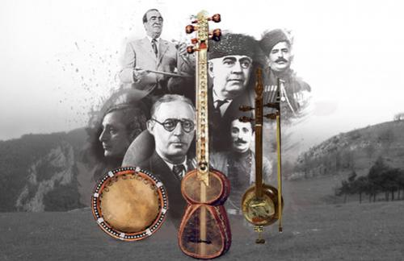
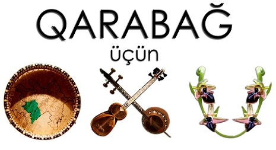
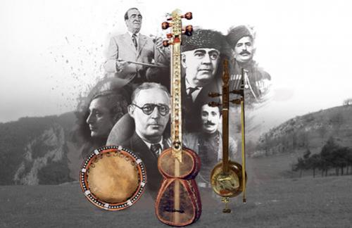
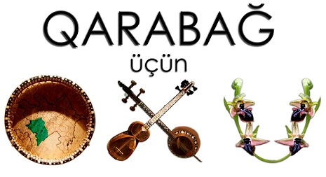

Qarabağ musiqisi
İlk yazılı ədəbi abidəmiz olan "Kitabi-Dədə Qorqud" dastanında musiqi ilə bağlı bir sıra parçaların mövcudluğu, dastan boyunca müxtəlif musiqi alətlərinin adlarının çəkilməsi Azərbaycan müsiqisinin qədimliyinə əyani sübutdur. Azərbaycan musiqi tarixində özünə mühüm yer tutan Qarabağın musiqi tarixi də öz qədimliyi və özünəməxsusluğu ilə seçilir. Qarabağda el şənliklərində və dini mərasimlərdə lap qədimlərdən musiqidən geniş istifadə olunurdu. Qarabağ musiqi tarixində öz qədimliyi ilə seçilən aşıq sənətidir. Tarixən Quzey Azərbaycanın aşıq bölgələrindən biri də Qarabağ aşıq mühiti olmuşdur. Qarabağda poeziyada ən mürəkkəb formalı şeirlərin bədahətən deyilməsinə görə aşıqlar sınağa çəkilirdilər. Aşıq Valehin dövründə Qarabağ aşıq mühitində aşıq musiqisi ifaçılığı artıq öz "çiçəklənən" dövrünə qədəm qoymuşdu. Aşıq Valeh sözün əsl mənasında böyük sənətkar idi. "Qarabağ şikəstəsi", "Kəsmə şikəstə", "Baş Sarıtel" və "Orta Sarıtel" də məhz Aşıq Valehin yaradıcılığının məhsuludur. XVIII əsrdə yaşamış Sarı Aşıq əsasən bayatılarıyla tanınır. O, "bayatı qoşmaq qadın işidir" deyənlərə meydan oxuyaraq yaradıcılığında bu janra üstünlük vermişdir. Aşıq Məhəmməd (1834-1914), Aşıq Əziz (1825-1918), Aşıq Hüseyn (1800-1880), Aşıq Əli (1807-1917), Aşıq Ələsgər (1821-1926), Molla Cümə (1855-1919) və başqalarının yüksək sənətləri Qarabağın aşıq sənətinin inkişafına öz müsbət təsirini göstərmişdir. İlk Azərbaycan professional qadın aşığı olan Aşıq Pərini də Qarabağ yetişdirmişdir. Bu yazılı ədəbiyyatla folklorun qovuşuğunun kamil bir mərhələsində baş vermişdir. XIX əsrin ortalarında çarizmin müstəmləkə siyasətinə zidd olaraq Azərbaycan xalqı Qərbi Avropa və rus mədəniyyətindən istifadə etməyə imkan tapırdı. Bununla əlaqədar olaraq Azərbaycanda yeni bir mədəni həyat qaynayırdı. Qarabağda, xüsusilə Şuşada elm və ədəbi fəaliyyət artdı. Hələ Vaqif dövründən başlayaraq, Şuşa şəhəri böyük ədəbi mərkəz kimi bütün Azərbaycanda şöhrət tapmışdı. Azərbaycan xalqının mədəniyyət tarixində ilk dəfə olaraq teatr, sirk tamaşaları, Avropa və Şərq konsertləri, musiqi, elm, maarif və bir çox sənət məclisləri, bundan əlavə mətbəə, kitabxana, realni uçiliş, seminariya və bir sıra mədəni-maarif müəssisələri Şuşada yaranmışdır. XIX əsrin 40-cı illərindən başlayaraq Şuşada incəsənətin müxtəlif sahələri inkişaf edirdi. Yerli teatr həvəskarları tərəfindən teatr tamaşaları göstərilirdi. Yeri gəlmişkən qeyd etməliyik ki, Qafqazın tarixində ilk dəfə teatr tamaşaları 1845-ci ildə Tiflis şəhərində göstərilmişdi. O vaxtları ticarətdə, mədəniyyətdə Tiflislə rəqabət aparan Şuşada isə ilk teatr tamaşaları 1848-ci ildə göstərilmişdir. 1891-ci ilin yazında Şuşada şəhər varlılarından H. A. Xandəmirov tərəfindən teatr binası tikildikdən sonra şəhərdə teatr tamaşalarının sayı artmağa başlandı. Şəhər əhli bu tamaşalara böyük maraq göstərirdi. Təsadüfi deyidir ki, böyük Şeksprin məşhur “Otello” faciəsi ilk dəfə Şuşada oynanılmışdı. XIX əsrin birinci yarısından başlayaraq Şuşada incəsənətin müxtəlif sahələri ilə birlikdə xanəndə sənəti də daha sürətlə inkişaf edirdi. Xanəndəlik sənəti Azərbaycanın başqa yerlərinə nisbətən Qarabağ mahalında, daha çox və xüsusilə Şuşa şəhərində inkişaf etmişdi. Bu şübhəsiz, təsadüfi bir hal olmayıb, Şuşanın coğrafi şəraiti, digər tərəfdən isə şəhərin geniş mədəni-iqtisadi münasibətləri ilə əlaqədar idi. Azərbaycanın başqa şəhərlərinə nisbətən Şuşada musiqiçi, oxuyan, rəqs edən daha çox idi. Təsadüfi deyildir ki, Azərbaycan xalqının musiqi tarixi ilə yaxından məşğul olan görkəmli musiqişünas V. Vinoqradov Şuşanın musiqi həyatından və Şuşa musiqiçilərinin Azərbaycanın musiqi həyatından və Şuşa musiqiçilərinin Azərbaycanın musiqi mədəniyyəti tarixindəki tutduğu roldan bəhs edərək yazmışdı: “Yaşıl otlaqların bürüdüyü sıldırım dağ döşündə gözəl mənzərəli Şuşa şəhəri düşmüşdü. Onun gözəl təbiət mənzərələri hər il səyyahları özünə cəlb edir, yaşıllıqlara qərq olmuş dağların mülayim cizgiləri yolçuları valeh edir. Lakin Şuşadan alınan estetik təəssürat bununla qurtarmır. Burada Azərbaycanın başqa rayonlarına nisbətən musiqi daha çoxdur. Burada həmişə xalq mahnılarını, xanəndələri, çalğıçıları dinləmək və rəqslərə baxmaq olar. Şuşa uzun zamanlardan bəri musiqi mərkəzi kimi tanınmış və xalq musiqi istedadlarının tükənməz məktəbi kimi bütün Zaqafqaziyada şöhrət qazanmışdır. “Şuşa musiqiçiləri” Azərbaycan musiqisinin tarixini yaratmış və onu yalnız öz vətənlərində deyil, həm də Şərqin başqa ölkələrində təmsil etmişlər. ” (V. Vinoqradov. Uzeir Qadjibekov i Azerbajdjanskaya muzıka. M. 1938-q str. 9. ) Xanəndəlik sənətinin inkişafı ilə əlaqədar olaraq keçən əsrin 70-80-ci illərində Şuşada musiqi salonları, məclisləri, dərnəklər və musiqi məktəbləri yaranmışdı. Şuşada musiqi məktəbinin yaradıcıları Xarrat Qulu və Molla İbrahim olmuşdur. Professor Bülbül qeud edir ki, tələbələr 13-14 yaşına kimi Molla İbrahimin, 14 yaşından yuxarı isə Xarrat Qulunun məktəbində musiqi dərsi keçirdilər. Xarrat Qulu Məhəmməd oğlu (1823-1883) o dövrün ən məşhur musiqişünası olmuşdur. O, klassik Şərq musiqisini kamil bilirdi. Həm də ilhamlı şeirlər yazırdı. Onun bir çox şeirləri və qəzəlləri məlumdur. Xarrat Qulunun özünün də gözəl səsi olmuşdur. Məhərrəmlik təziyəsini keçirmək məqsədilə Xarrat Qulunun təşkil etdiyi məclisə Şuşanın yaxşı səsi olan gənclərini cəlb edib şəbih səhnələri oynamaqla yanaşı, eyni zamanda onlara oxumağın, muğamatın, sirlərini də öyrədirdilər. Dini məqsəd daşımasına baxmayaraq haqqında bəhs etdiyimiz məclis Azərbaycanda vokal sənətinin inkişafında müəyyən yer tutmuş, Hacı Hüsü, Məşədi İsi, Sadıqcan, Əbdülbaqi Zülalov, Cabbar Qaryağdıoğlu, Keçəçioğlu Məhəmməd kimi sənətkarların yetişməsinə səbəb olmuşdur. Xarrat Qulunun ölümündən sonra Şuşada məşhur xanəndə Hacı Hüsü və görkəmli alim və müsiqişünas Mir Möhsün Nəvvab tərəfindən “Musiqişünaslar məclisi” yaradılmışdı. Bu məclisdə şer, musiqi və sənətin estetik problemləri müzakirə olunar, xanəndələrin düzgün oxumağına və ustalığına diqqət verərdilər. XIX əsrin 80-90-cı illərindən başlayaraq, xanəndə dəstələri teatr tamaşalarının fasilələrində çıxış edərdilər. Qafqazda ilk dəfə teatr tamaşalarının fasilələrindəki çıxışlar Tiflisdə və Şuşada olmuşdur. Xanəndələrin teatr tamaşalarındakı çıxışları Azərbaycanda musiqili teatrın meydana gəlməsinə təkan verirdi. Sazəndə dəstələrinin bu çıxışları həm də xüsusi şərq konsertlərinin əmələ gəlməsi üçün şərait yaradırdı. XX əsrin əvvəllərində xanəndələr səhnələrdə müstəqil olaraq çıxış etməyə başladılar. Azərbaycanda ilk Şərq konserti 1901-ci ilin yayında keçirilmişdir. Dramaturq Əbdürrəhim bəy Haqverdiyevin rəhbərliyi altında Şuşada “Xandəmirovun teatrı”nda keçirilən bu konsertdə məşhur sənətkarlar Cabbar Qaryağdı oğlu, Keçəçi Məhəmməd, Məşədi Dadaş, tarzən Sadıqcan, Məşədi Zeynal , Ata Bağdagüloğlu, aşıqlardan Abbasqulu, Nəcəfqulu və başqaları iştirak etmişdilər. Konsertdə bir tamaşaçı kimi iştirak edən Realni uçilişin fransız dili müəllimi, sonralar məşhur jurnalist Əhməd bəy Ağayev həmin konsert haqqında yazmışdı: “. . . Tamaşaçılar böyük ehtirasla, orijinal türk musiqisini və xalq mahnılarını dinləyirdilər ”. (“Kaspi”. 11 yanvar 1902. № 9) XIX əsrin 90-cı illərində Şuşada bir sıra ədəbi, musiqi və incəsənət məclisləri olmuşdur. Bu məclislərdən musiqişünaslar məclisi (rəhbəri Nəvvab), xəttatlar məclisi (rəhbəri Kərbəlayı Səfixan), xanəndələr məclisi (rəhbəri Hacı Hüsü), nüsxəbəndlər məclisi (rəhbəri Məşədi Əkbər), nəqqaşlar məclisi (rəhbəri Kərbəlayı Səfərəli və Nəvvab), memarlar məclisi (rəhbəri Kərbəlayı Səfixan) və s. məclislər olmuşdur. Şübhəsiz ki, bu məclislərin fəaliyyəti nəticəsində Şuşa şəhəri böyük incəsənət və musiqi mərkəzinə çevrilmişdi. XX əsrin əvvəllərində Şuşa mədəniyyət və istirahət məskəni kimi hamının nəzər-diqqətini cəlb edirdi. Şəhərin iki-üç mərtəbəli yaraşıqlı evləri, rahat mehmanxanaları, qəşəng hamamları, soyuq bulaqları, rəvac mallarla dolu olan mağazaları, xüsusilə hamının diqqətini cəlb edən güllü-çiçəkli bulvarı, “Yay klubu”, burada göstərilən maraqlı teatr tamaşaları və hər evdən ucalan musiqi avazları səyyahları heyran edərdi. Məhz buna görə də Şuşaya “Qafqazın konservatoriyası” deyərdilər. Şuşa özünün füsunkar təbiəti və gözəl mənzərələri ilə bütün dünyada şöhrət tapdığından hamı bu şəhəri görməyə, onun göz yaşı kimi şəffaf, buz kimi soyuq bulaqlarından içməyə, Cıdır düzündə at çapmaq yarışına baxmağa, İsa bulağında Qarabağ quzusunun ətindən kabab, Kəblə Məhərrəmin dadlı pitisindən, Molla oğlunun papiros kağızı kimi nazik olan lavaşından, Kəblə Mehdinin paxlavasından yeməyə və məşhur Qarabağ tut arağından dadmağa can atardı. Xüsusilə, yay aylarında şəhərdə həyat lap qaynayırdı. Yerli həvəskarlardan Azad bəy Əmirov, Əhməd bəy Ağdamski və başqaları Üzeyir Hacıbəyovun opera və operettalarını tamaşaya qoyub öz yerlilərinə estetik zövq verərdilər. Beləliklə, Şuşa XX əsrin əvvəllərində Qafqazın həm konservatoriyası, həm də Azərbaycanın musiqi beşiyi idi. O zaman Qafqazın harasına getsəydin orada çalıb-oxuyanın şuşalı olduğunu görərdin. Təsadüfi deyildir ki, Şuşaya həm də istedadlar məskəni deyərdilər. Bu istedadlar isə Şuşa ədəbi-musiqi məclislərinin və Qarabağ vokal məktəbinin yetirmələridir. . . XIX əsrin sonu XX əsrin əvvəllərində Qarabağın yetişdirdiyi ən görkəmli nümayəndələrdən biri də dahi bəstəkar, Şərqdə ilk operanın banisi, böyük dramaturq, ilk liberetto müəllifi, musiqili komediya janrının yaradıcısı Azərbaycan himninin müəllifi Üzeyir Hacıbəylidir (Hacıbəyov). Qafqazın konservatoriyası, Azərbaycan vokal məktəbinin beşiyi kimi məşhur olan Şuşada XX əsrin 20-ci ilinə kimi həyat qaynayırdı. Yay ayları hətta Orta Asiyadan, Rusiya, İran, və Türkiyədən gələn qonaqlar bu ömür uzadan şəhərin səfalı meşələrindən, sərin bulaqlarından, məsum uşaq qəlbi kimi pak olan havasından həzz alırdılar. Qarabağ xanəndələrinin xoş avazından doymurdular. Hər evdən, hər ağac kölgəsindən, hər bulaq başından Qarabağ xanəndələri öz qonaqlarına Azərbaycan musiqisindən qəribə hekayətlər söyləyirdilər. Hələ o vaxt deyərdilər: “Şuşanın uşaqları ağlayanda “Segah”, güləndə isə “Şahnaz” üstündə gülərlər” Cəsarətlə demək olar ki, Şuşanın verdiyi musiqi istedadlarını dünyanın heç bir ölkəsi verməmişdi. Şuşa –Xurşid banu Natəvanın, Mir Möhsün Nəvvabın, ifaçılardan Xarrat Qulunun, Hacı Hüsünün, Sadıqcanın, Məşədi İsinin, Əbdülbağı Zülalovun, Cabbar Qaryağdıoğlunun, Keçəçi oğlu Məmmədin, Məşədi Məmməd Fərzəliyevin, İslam Abdullayevin, Seyid Şuşinskinin, Bülbülün, Zülfi Adıgözəlovun, Xan Şuşinskinin, Rəşid Behbudovun, Məşədi Cəmil Əmirovun, Qurban Pirimovun, bəstəkarlardan Üzeyir Hacıbəyovun, Zülfüqar Hacıbəyovun, Fikrət Əmirovun, Niyazinin, Əfrasiyab Bədəlbəylinin, Soltan Hacıbəyovun, Əşrəf Abbasovun, Süleyman Ələsgərovun vətənidir. Bu hələ Şuşa musiqiçilərinin tam siyahısı deyil. “İtaliya vokal məktəbi” Avropa musiqi tarixində hansı mövqeyi tutursa, “Şuşa vokal məktəbi” də Şərq musiqi tarixində eyni mövqeyi tuturdu. Vaxtı ilə Şuşanı “Qafqazın İtaliyası” da adlandırmışlar.
.jfif) 


